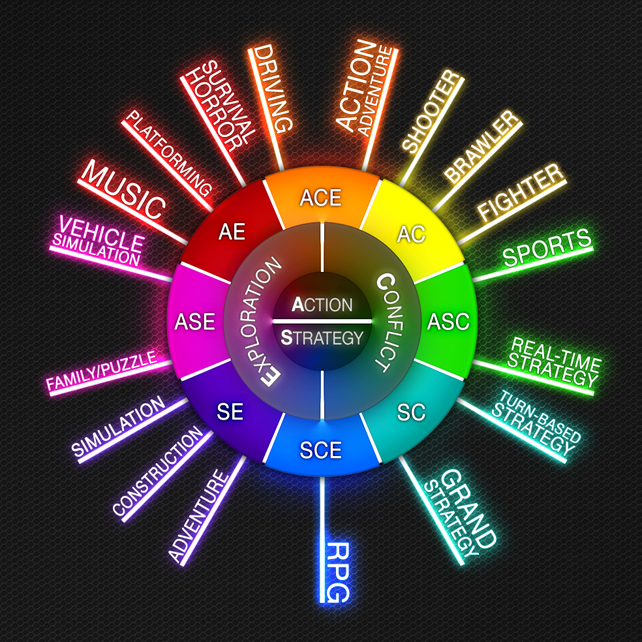
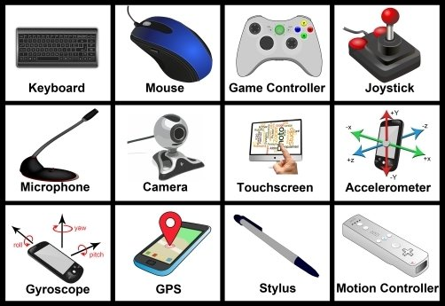

About
This website is a gaming wiki, explaining details about games

Hey reader, Arbaaz here and this is my gaming wiki. I am very interested in the gaming industry
because ever since I was young it has brought me great joy. Videogames are awesome, being
able to dive into so many realities and undertaking quests and objectives is entertaining and thrilling. I've travelled from the DS
to the Wii, to the Xbox 360 and PC. Now, I want to share this knowledge with others, to create new gamers and
to fuel dreamers.

Chances are, there is a game genre ideal for you. There are plenty of videogame styles
with many different mechanics that drive the experience. These 'genres' define what the game will play like,
and usually follow one genre, with several subgenres sometimes - to keep it consistent with its purpose. Some
popular genres include Role Playing Games, MMOs, Shooters, Strategy, Adventure. An example subgenre of shooter
would be a first person shooter. Similarly, a game could employ turn-based strategy rather than real-time.

To play a game there are different types of controllers available. The controller, and
mouse & keyboard are the most common methods of input. M&K is known for its precision, and extensive keybinding
options. A controller feels quite comfortable in the hand, and is perfect for interacting with a console from a
distance. I would generally recommend M&K for shooters and strategy games, and a controller for driving or
exploration games.
Who should you play with? Depending on the game, it can support different numbers of
players in a party or able to interact on the same map. Sometimes, going solo is more immersive and manageable.
Playing with friends, however, can be a really fun and engaging situation. Online multiplayer can support
gamers internationally, being able to connect with someone across the world is surreal. Linking with someone
random and going on an adventure can be funky.
What are you waiting for?